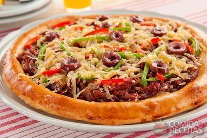

Menu Principal
-Home
-Especificações
-Fotos
-Multimídia
-Fale conosco
4 bifes de patinho (cerca de 100g cada)
1 sachê de MAGGI Natusabor Alho e Cebola
2 ovos
1 pitada de sal
1 pitada de pimenta-do-reino
1 pitada de orégano
meia xícara (chá) de farinha de trigo
1 xícara (chá) de farinha de rosca
meia xícara (chá) de molho de tomate
6 fatias de queijo mozarela
MODO DE PREPARO
Em um recipiente tempere os bifes com o MAGGI Natusabor. Em outro recipiente bata levemente os ovos e tempere com sal,
pimenta e orégano. Em seguida, passe os bifes, um a um, pela farinha de trigo, pelos ovos batidos e pela farinha de rosca.
Em uma assadeira untada com azeite, distribua os bifes e cubra com mais um pouco de azeite. Leve para assar por cerca de 30 minutos,
em forno médio-alto (200°C), preaquecido, virando os bifes na metade do tempo. Retire do forno e cubra cada bife com um pouco de molho de
tomate e uma fatia de queijo mozarela. Leve para assar novamente por cerca de 5 minutos ou até que o queijo esteja derretido. Sirva a seguir.